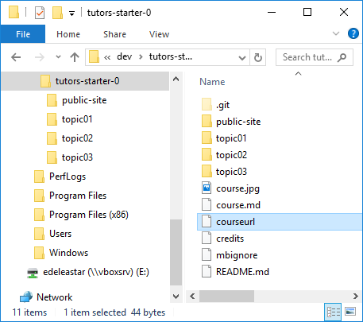
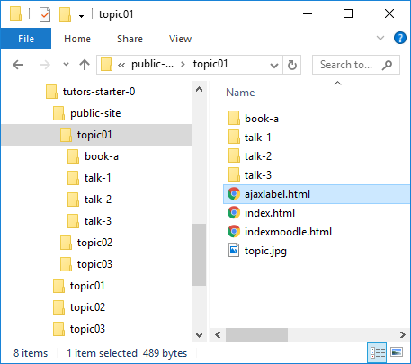
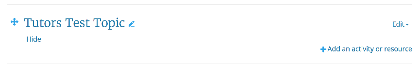
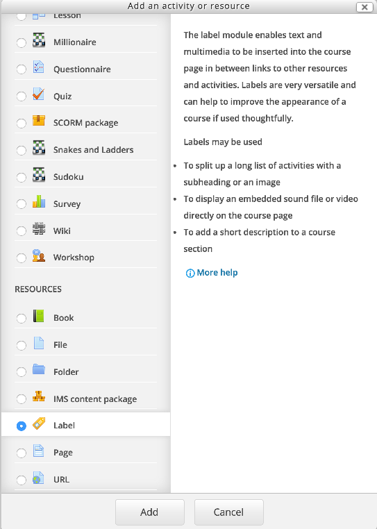
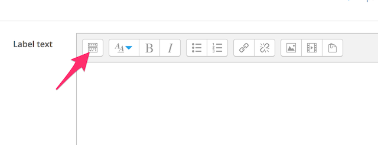
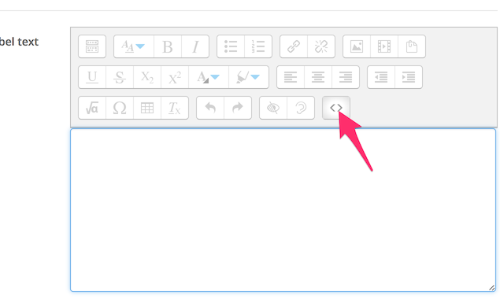
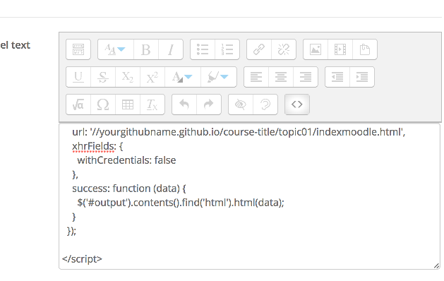
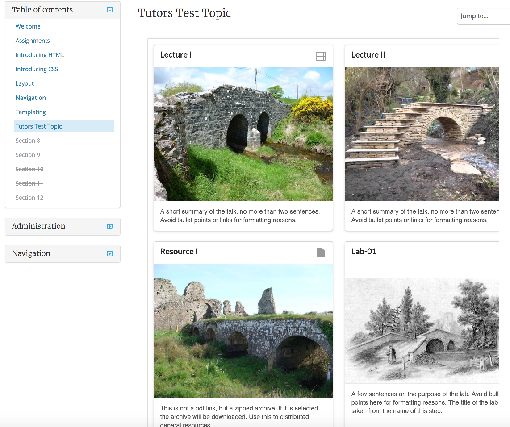

Bind a Moodle Topic to a gh-pages hosted tutors topic.
Now that we have the site live - we may choose to keep Moodle as the primary gateway to our course. To do this, we would like to "import" the github hosted site into moodle - rather than replicating the material there.
To get ready for the import, we need to make one small change to our course. In the source folder, there is a file called courseurl.

This is the default contents:
http://yourgithubname.github.io/course-titleEdit this, and replace with the actual url of your deployed course
http://[YOUR-GITHUB-NAME].github.io/[YOUR-REPO-NAME]For instance:
http://edeleastar.github.io/tutors-starter-01Note that the protocol in the above is http not https. This is important.
Regenerate the course via the tutors command, then commit and sync as outlined in the previous lab.
For each topic in the public-site folder, tutors will have generated a file called ajaxlabel.html:

There is one of these files for each topic.
The contents of this file will establish the link from a moodle topic to a github hosted site:
<div class="container">
<div class="row">
<div class="col-lg-11 col-md-11 col-sm-11">
<iframe id="output" style="width: 100%;" frameborder="0" height="1200">
</iframe>
</div>
</div>
</div>
<script>
$.ajax({
type: 'GET',
url: '//wit-tutors.github.io/tutors-starter-public//topic01/indexmoodle.html',
xhrFields: {
withCredentials: false
},
success: function (data) {
$('#output').contents().find('html').html(data);
}
});
</script>There is no need to understand/edit or work with this file - we can use it exactly as is. However, please note that each topic has its own slightly different version - so you will need each of these in the procedures that follow.
And the procedure is:
Ajaxlabel.html into the labelThis is illustrated in the next step...
For any existing or new moodle course, create an empty topic:

Switch to edit mode, and add a new label to the topic:

ajaxlabel.html into the labelThis step will require you to edit the label, and change the editing mode.
When editing, first reveal additional toolbar options:

And now switch to HTML Source view by pressing the <> icon:

Now, copy/paste the entire contents of the selected ajaxlabel.html files directly into the label:

Press save - and switch back to normal (non editing) mode. The topic hosted on github should be visible. The content will not be visible until you switch (from edit mode).

This is a one-off step, establishing a binding between the moodle topic and the topic as hosted on github. Any updates to the github content will be automatically rendered in moodle. I.e. you do not need to revisit this step if you make changes to your content.
Try introducing a completely new topic into the course you have been experimenting with. Perhaps just duplicate an existing topic - but make some changes to the talk images + summaries.
Publish the course with the new topic, and also bind the published topic to a moodle topic.
To reinforce the nature of the binding between Moodle and gh-pages, try the following:
talk in the topic you have bound to gihub exercise above (perhaps just duplicate an existing talk).The last step does NOT require you to edit the topic/label in any way - we can just wait for it to fetch the updated version when the caches have timed out.